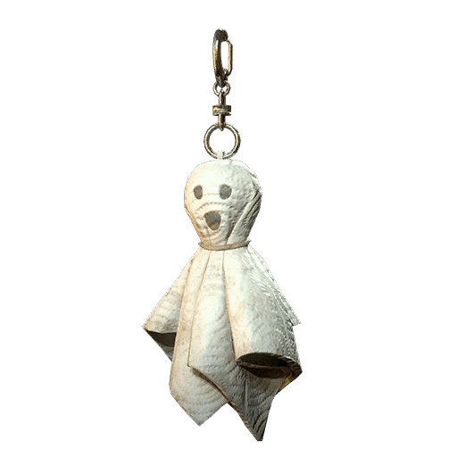
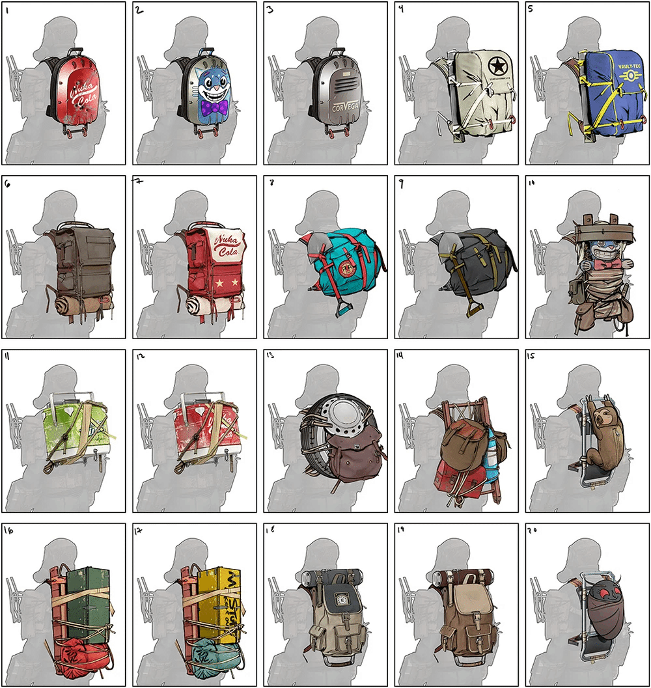

バックパック
装備することでプレイヤーの最大総重量を増加させるアイテムです。
冒険における必需品ですが、パワーアーマー着用中は効果が無効になる（装備自体が外れるわけではないが、重量ボーナスと改造効果が消える）という重要な制限があります。
バックパックの種類と入手方法
大きく分けて2つの種類があり、性能（容量）が異なります。
1. スモール・バックパック
性能:
最大総重量 +5 ～ +30（レベルに応じて増加）。入手方法:
メインクエスト序盤で訪れる「モーガンタウン空港」ターミナル内の監督官の箱から設計図を入手。特徴:
面倒なクエストが不要で、ゲーム開始直後から手軽に重量を増やせる初心者向けの装備です。改造（MOD）も適用可能です。
2. スタンダード・バックパック (Standard Backpack)
性能:
最大総重量 +10 ～ +60（レベルに応じて増加）。入手方法:
クエスト「The Order of the Tadpole」を完了し、ポッサムスカウトになることで設計図を入手。特徴:
スモールバックパックの2倍の容量を持ちます。
入手には「オタマジャクシバッジ」を集める必要があり少し大変ですが、最終的にはこちらへの移行が推奨されます。
改造モジュール
バックパックには1つだけ「改造（MOD）」を施すことができ、これが非常に強力です。
※設計図は主に、オタマジャクシ/ポッサムバッジとの交換や、金塊ベンダー（ミネルヴァ等）から入手します。
【特に人気・実用的なモジュール】
ハイキャパシティ
効果: 総重量が大幅に増加する（最大+120）。
代償: エネルギー耐性と放射能耐性が低下する。
用途: とにかく荷物を沢山持ちたい時に最適。
化学者
効果: 薬品・薬物の重量を90%軽減する。
用途: スティムパックやRadアウェイなどを大量に持ち歩くプレイスタイル用。
Perk「Traveling Pharmacy」を外して他のPerkに回せるのが最大のメリット。
食品雑貨店
効果: 食料・飲料の重量を90%軽減する。
用途: 食料品を大量に持ち歩く場合用。Perk「Thru-Hiker」の代わりになります。
【その他のモジュール】
アーマープレート : 物理耐性を上げるが、持ち運べる重量ボーナスが少し減る。
絶縁 : エネルギー耐性を上げるが、重量ボーナスが減る。
鉛入り: 放射能耐性を上げるが、重量ボーナスが減る。
冷蔵 : 食料が腐る速度を遅くする（-50%）が、重量ボーナスが減る。
レベルとクラフト
バックパックはレベル1、10、20、30、40、50の刻みで作成可能です。
レベルが高いものほど、重量ボーナスが大きくなります。
レベル50になったら、必ずレベル50のものを作り直しましょう。
見た目（スキン）とアクセサリー
スキン:
アトムショップやシーズン報酬などで入手可能。
性能は変えず、見た目だけを「ぬいぐるみ」や「タンク」などに変更できます。

バックパック・フレア:
バックパックにぶら下げるキーホルダーのようなアクセサリーです。
最大2つまで装着可能です。表示設定:
設定メニューで「バックパックを表示しない」ことも可能です（効果はそのまま維持されます）。

何でも拾いたくなってしまう私たちにとって、バックパックは単なる道具ではなく、「旅の自由」そのものだなって思います。
最初はモーガンタウン空港で拾った「スモール」から始まって、少しずつレベルを上げて、やがては難しい試験（オタマジャクシ！）を乗り越えて「スタンダード」を手にする…。
その過程が、まるで一人前のウェイストランダーへと成長していく証のようで、とても愛おしく感じます。
特に感動するのが、「改造モジュール」の魔法ですよね。
山ほど持っているスティムパックや、喉を潤すための大量の水が、「化学者」や「食品雑貨店」の改造を施した瞬間に、羽のように軽くなるあの感覚。
「ああ、これでまた新しいお宝を拾える！」という安心感は、何物にも代えがたい喜びです。
貴重なPerkを他のことに使えるようになるのも、本当に助かります。
ただ、そんな頼れるバックパックも、パワーアーマーを着た瞬間だけは「お留守番」になってしまうのが、少し切なくもあり、面白いところです。
「強敵だ！変身！」と意気込んでパワーアーマーを着た途端に、「ドスン」と重量オーバーで動けなくなる……そんなドジを踏んでしまうのも、Fallout 76ならではの愛嬌かもしれませんね。
性能もさることながら、お気に入りのぬいぐるみスキンを付けたり、フレアをぶら下げたりして「後ろ姿で個性を出せる」のも素敵です。
もしあなたがまだ「スタンダード」への移行や「ハイキャパシティ」を迷っているなら、ぜひ挑戦してみてください。
きっと今よりもっと、アパラチアの景色をゆっくり眺める余裕が生まれるはずですよ。
This article was created by translating and editing Backpack from Nukapedia: The Fallout Wiki.
Licensed under the Creative Commons Attribution-Share Alike License (CC BY-SA 3.0).
コミュニティ維持のため、寄付を受け付けております。
> COMMENTS